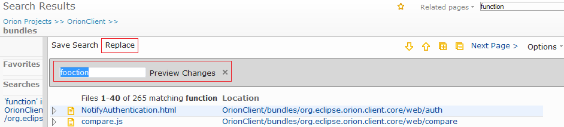
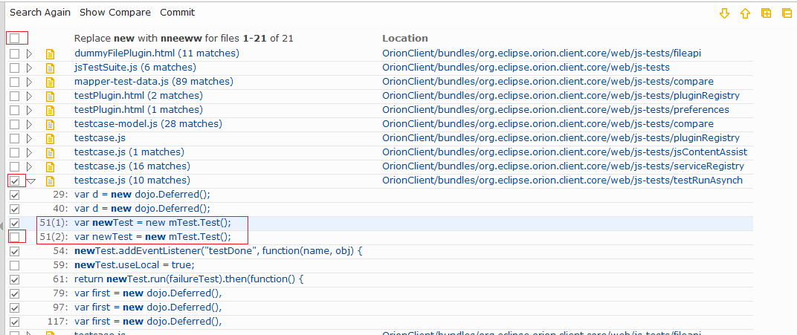
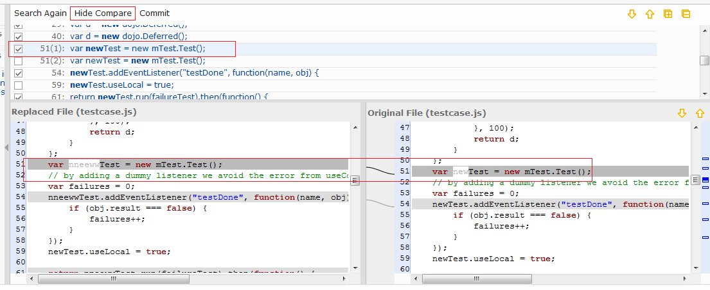
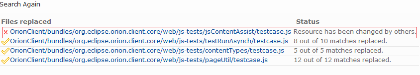

| Replace page | ||
|---|---|---|
|
|
|
|
| Global Search and Replace | Sample: refactor a function name | |
Replace page allows you to replace all or part of the matches by a new string. You can select what files and which matches you want to replace with the replacing string. After all the selected files are replaced, a report page indicates the success or failure.
In the search result page, click on Replace on the tool bar to bring up the slide out. Type the replacing string and hit enter or click on Preview Changes to go to the replace page. Note you can also use ESC key or click on x to go back to the search page.

In the replace page, all the files and matches are displayed in a similar way as the result page does. In addition to that you can use check box to select the files and matches you want to replace. Note that if there are multiple matches in a single line, it will be split to multiple lines where each line represents one match. There are 3 levels of the check box.

Keyboard navigation in the replace page is similar to the search results page. But as the file and match names are not links to open the editor, enter key is not available. Also note that there is no context tip because you can view them in the compare view.
When the replace page is loaded, the compare view is displayed by default at the bottom of the main pain. While you are iterating matches, the compare view highlights the difference for the current row. Note that you can click on Hide Compare on the toolbar to hide it for a smoother iteration and bring it back later by Show Compare.

Once you have selected all the matches that you want to replace, click on Commit on the tool bar. This will write all the replacement on the server.
After the changes are committed, the replace page displays a list of files indicating the success or failure of the replacement. It also reports on how many matches were replaced on each file. You can click on any file to see the new content in a new tab. If some body else has changed the same file while you are replacing, a failure is generated and you have to refresh the page to redo it. The report is not really a page by different URL. Refreshing the page will just restart the replacement.

Also note that if the changes happen on the working directory of a git repository, you can undo them in git status page.
As the search itself is based on pages, the replace is based on page as well. Click on Next pages or Previous pages to replace the same key word by the same replacing word.
|
|

|
|
| Global Search and Replace | Sample: refactor a function name |